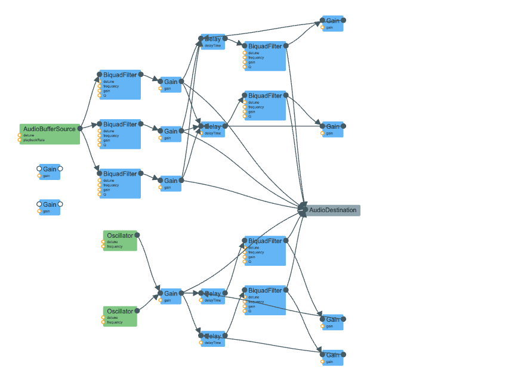

Bubbling babbling brook.
Clock tick.
(Debugging visualizer for babbling brook)
I was aiming to recreate the sound of a clock ticking. Following Farnell's description, I used two methods of synthesis: filtered white noise for the main tick, and high sine oscillators for the escapement sound. Notable functions in my code are: createEnvelope, the equivalent of Farnell's square decay envelope, with an attack of 1.0 ms and parameterized delay; createBandPassFilter, which takes a band pass of custom frequency with a high resonance of 30, as Farnell suggests; createClockBodySound, which generates a series of delays and filters - to add body resonance to clicks and escapements you connect them to the delays it generates; triggerEscapement, the function that creates the oscillators for the escapement sound and starts one 20ms after the other to get the alternating sound described by Farnell; triggerTick, which creates three different clicks (band passes of white noise) to make the sound of one click. I added a bit of randomness to the clicks' frequency and decay time so that each tick would not sound the exact same. The escapement sounds every half second, versus every second for the tick, to give the sense that the mechanisms are working in between hand ticks. Interestingly, Farnell seems to have an extra clunk sound for the clock hand, and then the ticks & escapements are slightly off-sync (125 bpm) with that 60bpm hand clunk. However, I haven't gotten that far yet and am settling with a constant tick to replicate the hand, perhaps for a smaller clock-like device.
